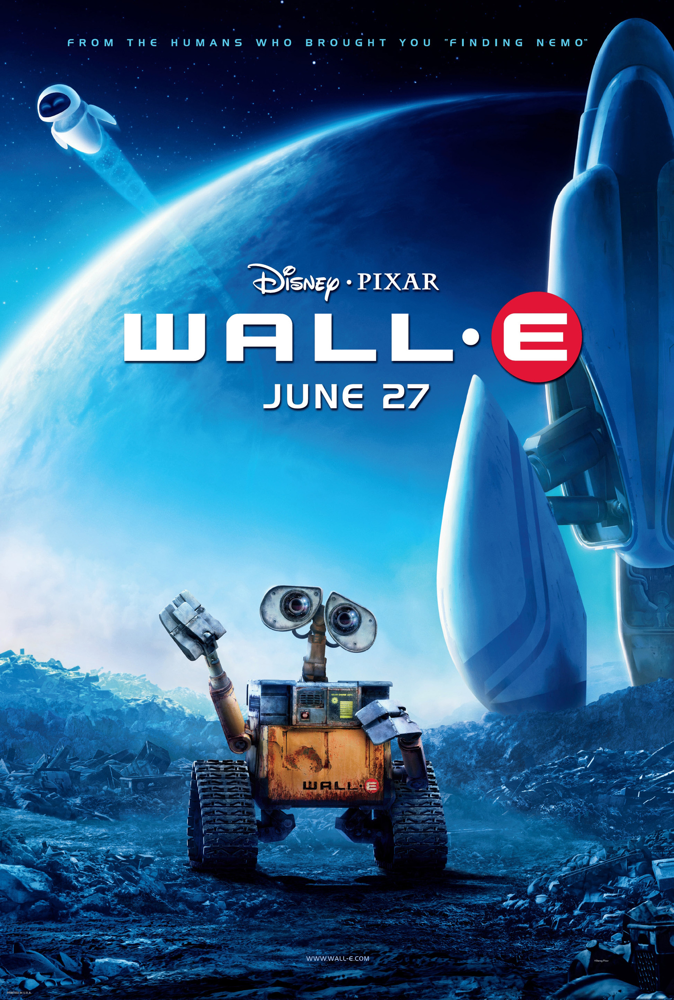
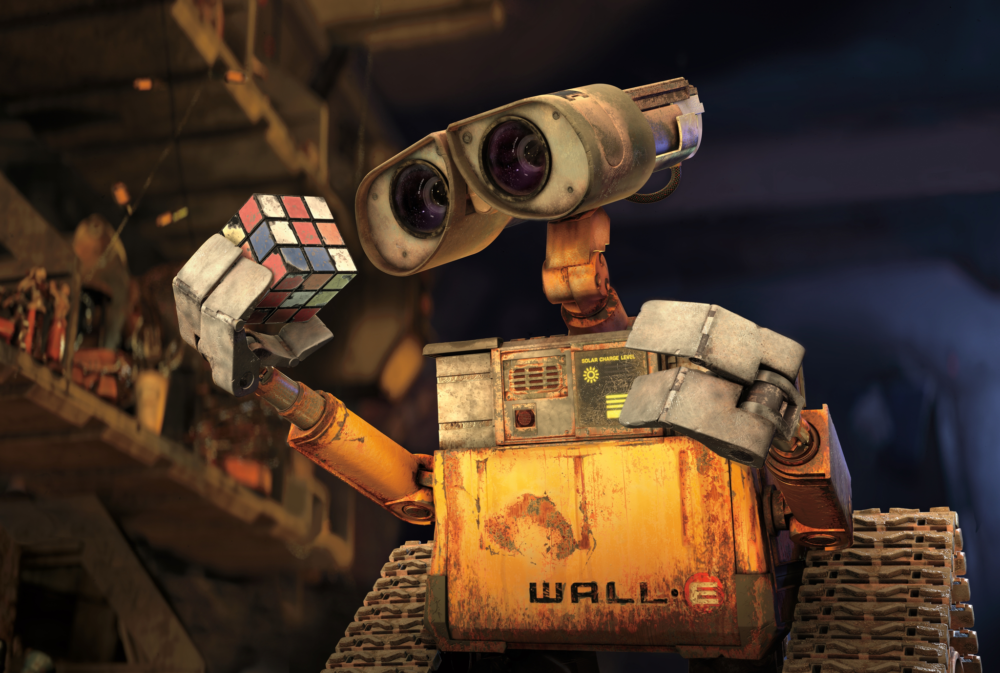
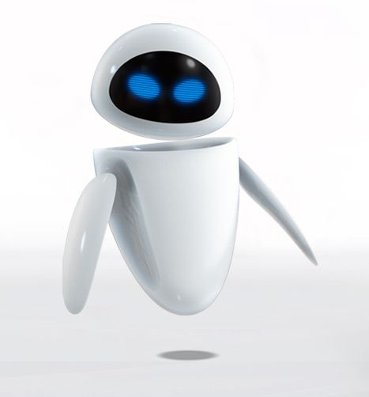
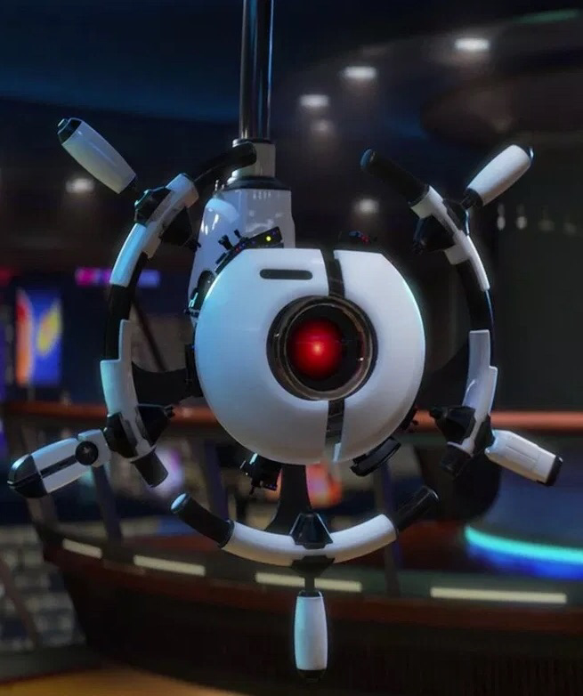

Wall-E The Movie

Plot: In 2105 the level of
pollution of planet Earth is very high, with the earth's
surface now completely covered with garbage. The Buy n Large
Corporation (BnL), a large trading company that took over the
government of the World, has built a fleet of large spacecraft,
the flagship of which is the Axiom, on which the whole
of humanity embarked on a five-year cruise in order to
survive, while on Earth the BnL has built and deployed an
army of robots called "WALL-E" Unfortunately, something is
not going as it should: for unspecified reasons, the robots
are all gradually deactivated and in 2110 the return mission
cannot take place, since the planet has not been cleaned up.
Only one of the robots, however, remains in operation.
WALL-E

WALL-E: is the protagonist of
the film, it is similar to a cube provided with two tracks
moved by three gears each. It is equipped with two cameras
as eyes, mechanical arms that allow it to grasp objects,
and a device that allows it to compact waste. At first he
was a soulless and cold robot, but over the years he
develops a personality, thanks also to the objects he
finds and preserves, especially thanks to the cassette of
the movie Hello, Dolly!, which makes him know love and
makes him dream of finding a partner.
EVE

EVE: It's a high-tech robot-probe,
sent to Earth to search for a life form. At first it is cold,
hostile and tends to follow only its directive, not considering
WALL-E. Later thanks to the robot he will discover a new world,
make friends and fall in love with him, understanding that the
robot would do anything for him; in fact he will change the
directive to be with him and repair him once he returns to
earth. When he sees that WALL-E has lost his memory, he will
do anything to make him come back to no avail. Scounded,
thinking he has lost his love, he gives him a kiss, inadvertently
returning the memory to the robot.
Commander B

Commander B. McCrea: He is the captain
of the ship Axiom. At first he appears quite listless, with the
only concern of announcing the communiqués, as the ship's command
is left in the hands of its co-pilot/helmshaft AUTO. At the
announcement of the discovery of the plant he is initially frightened
by the radical change that will entail returning to Earth, but thanks
to the involuntary help of WALL-E he remains fascinated by the planet
(consuming his time researching the Earth on the spaceship's computer)
and will do everything to return home. AUTO always tries to stop it,
but eventually McCrea will be able to deactivate it by standing up
even if severely obese (like almost all other humans on the ship),
and regain manual control of the ship.
Auto

AUTO: is the main antagonist of
the film. It is a highly technological, sentimentless and
very sadistic rudder, scrupulously following its obsolete
directive (A-113), which would be to remain on the Axiom,
after the BnL had inaccurately concluded that the Earth
could not be saved. He does everything to be able to
sabotage humans who are trying to return home. He will
be stopped by the commander and deactivated. The appearance
of the character, with the characteristic red "eye", is
a reference to HAL 9000, the supercomputer of the spacecraft
Discovery One, which appeared in the 2001 film: A Space
Odyssey and in the novel of the same name, also rebellious
against the human crew.